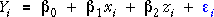
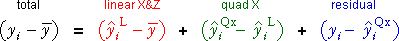
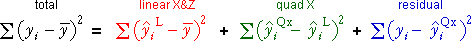
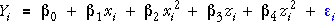

Testing for curvature in the presence of other explanatory variables
A similar method can be used to test for curvature in X when there are other variables in the model.
We start by examining whether there is curvature in one variable, X, when two explanatory variables, X and Z, may affect the response. We consider the sequence of models



Each additional term allows the residual sum of squares to be decreased. The following equation splits the difference between the values and their overall mean into components corresponding to the changes caused by increasing the complexity of the models.

In this equation, the superscripts 'L' and 'Qx' denote fitted values from the model with only linear terms in X and Z and the model with an extra quadratic term in X.
As in other sequences of models of increasing complexity, the sums of squares of these components satisfy a similar equation and form the basis of an analysis of variance table.

Leafing-out time of maples
The diagram below shows an index of the leafing-out time of batches of maple seedlings grown in Wooster, Ohio. The explanatory variables are the latitude (X° North - 30) and mean July temperature (Z° F - 60) of the place of origin of the seeds. A relationship would prove that there is a genetic difference between seeds from the different locations.
Use the pop-up menu to display the different components on the diagram and highlight their sum of squares. In this diagram, the grey plane represents the overall mean response, the blue plane is the least squares plane for the model with no curvature, and the red surface (shown as a grid) is the least squares surface for the model with curvature in X.
Observe that each component is the difference between the fitted values of two models.
In the following diagram, these sums of squares are shown in an analysis of variance table.
Although the curvature of X in the least squares line is quite noticeable, the p-value associated with the quadratic term in X is 0.1418, so we would conclude that there is no evidence in the data that the relationship is nonlinear.
Testing curvature of X and Z
To extend the analysis of variance approach to models with quadratic terms in both X and Z, it is necessary to take into account the order of adding the two quadratic terms. For example, adding the quadratic term in X before the quadratic term in Z corresponds to the following sequence of models.



Adding the quadratic terms in the opposite order can result in different sums of squares for the two quadratic terms.
This is simplified if the two explanatory variables, X and Z are orthogonal in a designed experiment. Then the explained sum of squares for the quadratic term in X is the same whether or not the quadratic term in Z is already in the model. The following example shows a data set where X and Z are orthogonal in this way.
Energy expenditure of bees
In the experiment with bees on the previous page, there were three observations at each combination of three levels of temperature and sucrose, so temperature and sucrose are orthogonal. (The quadratic terms in temperature and sucrose are also orthogonal due to the design.)
Since the order of adding the quadratic terms does not alter their sums of squares, only a single anova table is needed. Observe that the p-values for the quadratic terms are identical to those from the t-tests on the previous page.
We therefore again conclude that there is moderately strong evidence of nonlinearity in the relationship between energy expenditure and temperature, but no evidence of nonlinearity in the effect of sucrose.